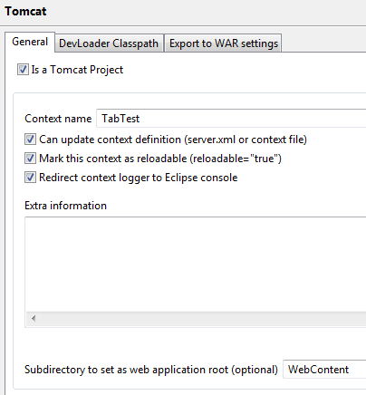
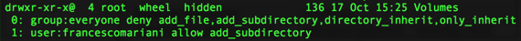
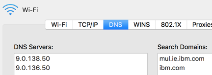

Getting Started
TI development can be done on any Windows 10 machine (virtual or physical), and requires only a 64-bit JDK and RTC SCM Tools to be available on the machine to begin.
[Various places in this page mix Windows and Mac syntax (e.g., forward and backward slashes).]
Note: For setup of TI 7.0.8.0 on Windows (haven't tried Mac) you might want to install WAS 8.5.5.12 first and point WAS_HOME, JAVA_HOME and J2EE_JAR at that. Otherwise you may run into java version issues.
Connect to Artifactory
With file server Tiny being retired, developer streams will now bootstrap from the Artifactory repository instead of fileserver Tiny.
This page explains the steps required to switch over.
Environment Variables
All developers should have access to Artifactory and must set the following four environment variables on their development machine:
DEV_ARTIFACTORY_URL=https://eu.artifactory.swg-devops.com:443/artifactory/wh-spmdevops-buildservices-generic-local
USING_ARTIFACTORY=TRUE
ARTIFACTORY_USER= <your IBM intranet user name in lowercase>
ARTIFACTORY_TOKEN= <your artifactory token>
To get your Artifactory token: - login to Artifactory using your IBM intranet credentials - go to
https://eu.artifactory.swg-devops.com/artifactory/webapp/#/profile
The token is in the 'API Key' field and comprises a string of approximately 70 characters.
The bootstrap process
Building a stream requires zip files containing tools and lower layers to be extracted onto the local stream. This is done by an Ant script. Running an Ant script requires Ant and Java to be available on the developers machine and bootstrapping is the process of making these available. Previously a shared drive on Tiny was mounted and these were run directly from that drive. Now these are first unzipped into a local prerequisites directory (~/preReqs on Mac/Linux, C:\CC\DevEnv\preReqs on Windows) and executed from there.
The four scripts to do the bootstrapping are:
- bootstrap
- bootstrap.bat
- bootstrap.xml
- getResource.xml
These are being pushed out on each stream. If you need to work on a stream where they're not yet available, you can pull down a local copy of the files from here:
Disabling repository access
If you don't need to access the repository locally - ie if you have already downloaded all the zipped components required by your stream -
you can disable the bootstrap + download step by setting environment variable SKIP_UNZIP_APPS=TRUE.
This should be only used as a short term measure to avoid delays or problems accessing the repository.
Access via browser
Any file in the artifactory repository can be accessed by a browser. E.g: the SDEJ zips can be downloaded from
https://eu.artifactory.swg-devops.com/artifactory/wh-spmdevops-buildservices-generic-local/ProductDevelopment/DevReleases/SDEJ_CDEJ_release/
NB if you download a zip file from here, your browser may cache the zip file locally. Therefore if the file on Artifactory changes, attempting to download it again may simply fetch the old version of the file. In this case you should delete your browser cache first or use a private browser window.
Environment Setup on MAC
Get your Curam-AD access id.
- In Verse (mail application) search for "Access Management Curam-AD"
- If you weren't yet granted access to Curam-AD, follow the instructions on Joining the Curam AD domain
- If you were granted access to Curam-AD your id should be in this email.
- Create a global file in your home directory (i.e. /Users/francescomariani ) “.bash_profile" contents should include the following environment variables, use your corresponding value:
export CURAM_ACCOUNT=<Value-gotten-from-Curam-AD>
# To stop the Java icon popping up in the Dock tray and set the right encoding
export JAVA_TOOL_OPTIONS='-Dapple.awt.UIElement=true -Dfile.encoding=Cp1252' - Run " . ~/.bash_profile " to pick up the changes
- Create a global file in your home directory (i.e. /Users/francescomariani ) “.bash_profile" contents should include the following environment variables, use your corresponding value:
Install RTC
If you do not have RTC already installed on the workstation:
- Install Apple Java 6 from the Mac@IBM App Store, Utilities Section (needed for Eclipse)
Install a JDK 7 - there is no Sun Java 6 available for Mac so we are forced to use 7 here unlike Windows Dev- RTC install - Unzip tiny/Applications/RTC/5.0.2/RTC-Client-Mac64-5.0.2.zip to your machine and run jazz/client/eclipse/Eclipse.app
If you have it already installed, read below.
(RTC Setup described on SPM DevOps Community - https://w3-connections.ibm.com/wikis/home?lang=en-us#!/wiki/W412ac2882a19_4d59_b700_74e4a5b51784/page/How%20to%20connect%20the%20eclipse%20client%20to%20a%20project%20area)
Set up the DevEnv
Setup eclipse tools
-
Give appbuild executable permissions
-
chmod 777 appbuild
-
-
Initialize DevEnv
-
export JAVA_HOME_OVERRIDE=`/usr/libexec/java_home`
- IF BUILDING AGAINST 6.0.5.10-iFix4 - You need to request access to TechInf folder within Tiny
- Access to TechInf is requested via Notes://ccdc2/80256DB900325960/
- Create General Support Request --> WH LDAP & Active Directory
- Short Description: Require access to the TechInf folder on tiny
- Detail Description: I'm trying to build 6.0.5.10-iFix4 and require access to TechInf folder within ProductDevelopment
-
./appbuild dummy
- If building against 6.X run:
- ./appbuild -f commons\build.xml eclipse
- ./appbuild -f client\components\build.xml
-
unset JAVA_HOME_OVERRIDE
-
-
Give java & eclipse executable permissions from DevEnv folder (This will be shown in the output from ./appbuild dummy command (e.g. /Users/jamesduf/TIDevEnv_6.x
-
If building against 6.x
-
find ~/TIDevEnv_6.x/tools/java/ -type f -exec chmod 755 {} \;
-
find ~/TIDevEnv_6.x/tools/eclipse/ -type f -exec chmod 755 {} \;
-
-
Else
-
find ~/TIDevEnv/tools/java/ -type f -exec chmod 755 {} \;
-
find ~/TIDevEnv/tools/eclipse/ -type f -exec chmod 755 {} \;
-
-
Init workspace
- Create TI/setenv.sh - ! Every time you open new Terminal and want to build, you need to run this file in it once " . ./setenv.sh " !
- From TI Directory
- If building against 6.x
- Place these files in lib/nonrelease/
- was_j2ee6.jarView Details
- com.ibm.ws.admin.client_8.5.0.jarView Details
-
echo "export J2EE_JAR=`find $PWD -name was_j2ee6.jar`" >> setenv.sh echo "export JAVA_HOME_OVERRIDE=~/TIDevEnv_6.x/tools/java" >> setenv.sh echo "export ANT_HOME=~/TIDevEnv_6.x/tools/ant" >> setenv.sh
- Apply the following patch: TI-6.2MacPort.patchView Details
- Place these files in lib/nonrelease/
- If building against 7.x REVIEW: This step is causing issues on macOS, not doing this step works fine.
-
echo "export J2EE_JAR=`find $PWD -name was_j2ee6.jar`" >> setenv.sh echo "export JAVA_HOME_OVERRIDE=~/TIDevEnv/tools/java" >> setenv.sh
-
- Create TI/coreinf/properties/Bootstrap.properties - NOTE: Update item in bold below to the version you're Developing against!
-
Copy and paste below in Terminal from TI directory - first paste in a text editor so you can update the value
-
cat <<EOT >> coreinf/properties/Bootstrap.properties curam.environment.bindings.location=`pwd`/coreinf/properties curam.environment.tnameserv.port=1221 # H2 curam.db.type=H2 curam.db.name=Curam_TI_6206iFix2 curam.db.username=h2admin # The encrypted password is "password" curam.db.password=HlIxprF/66CsSSm6PON5+A== curam.db.h2.directory=~/TIDevEnv_6.x/H2 curam.db.h2.mode=embedded curam.db.serverport=9092 curam.db.servername=localhost # Needed for Eclipse/RWD only curam.testing.datasets=`pwd`/TestDatasets dbtojms.credentials.encr.text=b8nbWgbJtUFIZ25vODA4Vw== EOT
-
-
- Create TI/coreinf/properties/AppServer.properties
-
Copy and paste below in Terminal from TI directory
-
cat <<EOT >> coreinf/properties/AppServer.properties # Acceptable values are IBM or BEA. as.vendor=IBM # The username and password for admin server. security.username=websphere # encrypted password 'websphere' security.password=RZq542wPRdtvDXdmXiln9A== curam.security.credentials.jms.messagedrivenbean.username=SYSTEM curam.security.credentials.jms.messagedrivenbean.password=hIAidlp83Q8= node.name=localNode curam.server.name=CuramServer # The default port for WAS is 2809, for WLS is 7001, for NAS is 50504 curam.server.port=2809 curam.db.auth.alias=databaseAlias curam.server.ipaddress=localhost curam.webservices.httpport=9082 curam.client.httpport=$HTTPS_PORT EOT
-
-
- From TI run - NOTE: The initial ". " is very important as it means that properties exported will persist within this shell
- . ./setenv.sh
- Build!
-
export JAVA_HOME=<path-to-java-from-TI-DevEnv>
-
./appbuild cleanserver cleanclient
-
./appbuild server client
-
./appbuild tabtestapp tabtestdatabase
-
./appbuild clientmockapp
-
Troubleshooting
- If you are getting a compiling issue about MockHttpServletRequest.java and MockServletContext.java when building client, override those two files with these MockServletJavaFiles.zipView Details
- If building against 6.x you may have to comment out unknown overridden methods
- If you see issues with building e.g. "the project cannot be built until its prerequisite is built. Cleaning and building is recommended" try deleting the .jazz5/.jazzlock file from within your top level workspace
Eclipse
Open Eclipse
- Some Streams of TI come with a packaged version of eclipse. To start it, from your respective DevEnv directory run
- find . -name Eclipse.app -type d -print0 | xargs -0 -I{} find '{}' -name eclipse -type f
- Then point your workspace to a separate location that makes most sense to you e.g
~/Developer/TI/6206-iFix2
Setup Eclipse Preferences
- Open the Preferences Menu > Eclipse - Preferences.
- Change the Compiler compliance level to 1.7 in Java>Compiler
- Change the Installed JRE to point at the java in your dev env, i.e. /Users/francescomariani/RTCdev/DevEnv/TI_7.0.0.0/tools/java
- Change the Tomcat panel to point to use Tomcat 7 and select the Tomcat DevEnv Home path i.e. /Users/francescomariani/RTCdev/DevEnv/TI_7.0.0.0/tools/tomcat by default. Update the JVM section with the above JRE.
At the end of all your Eclipse setting, run from TI folder the command ./appbuild cryptoconfig to generate the CryptoConfig.jar file into java\jre\lib\ext
Note: If you import the generated Curam.epf, your eclipse will use the Apple Java. This may not have the CryptoConfig.jar file in it yet. If this is the case you will get a DB password issue on launching StartServer. To get around this, run
sudo chmod +a "user:$USER allow add_file" "`/usr/libexec/java_home`/jre/lib/ext"
enter your password
BAK_JAVA_HOME=$JAVA_HOME
export JAVA_HOME="`/usr/libexec/java_home`"
./appbuild cryptoconfig
export JAVA_HOME=$BAK_JAVA_HOME
unset BAK_JAVA_HOME
From here you can follow the Windows's steps below from Point 8 with very light differences due to the different OS, and be sure to change the JRE and Tomcat.
Trouble Shooting Eclipse
- Currently the version of eclipse that
TI/tests/TabTestApp/webclient/components/core/CDEJResources.properties
-TraceOn=false
-JavaScriptTraceOn=false
TI/tests/TestModelClient/JavaSource/curam/omega3/i18n/CDEJResources.properties
-TraceOn=false
TI/tests/ClientDepApp/JavaSource/curam/omega3/i18n/CDEJResources.properties
-TraceOn=false
Environment Setup on WINDOWS
These steps assume that you do not have RTC already installed on the workstation.
If you have RTC available, you can create the workspace (following the same naming convention) and load it from there. Pay particular attention to the sandbox location in advanced settings. Once the workspace is loaded, you can skip to step 6.
- Install RTC SCM Tools
- Copy \\tiny.mul.ie.ibm.com\Applications\RTC\5.0.2\RTC-scmTools-Win64-5.0.2.zip to the root of the drive and extract.
- Rename the 'jazz' folder to 'RTC-SCMTools'
- Add C:\RTC-SCMTools\scmtools\eclipse to the PATH environment variable
- Create a directory to hold your RTC workspaces, e.g. C:\RTC-Dev and open a command prompt there.
NOTE: Steps 3/4/5 Can all be done without memorizing the commands. Use the script attached to this wiki, rtcstream.bat. You can run it anywhere if you have the RTC SCM Tools setup from Step 1 but it's handy to place it in the Windows C:\Users\<username> dir, as this is where 'cmd' typically launches to. This script basically prompts for each variable and then offers to run the commands inline.
- Establish a connection to the RTC repository:
-
scm login -r https://jazz031.hursley.ibm.com:9443/ccm -n jazz031 -u username@ie.ibm.com -P password
- Note: This depends on having a 64 bit jre on your PATH - most Curam devenvs are 32 bit. If you get this error, you are using a 32 bit variant: Failed to load the JNI shared library "..........\jvm.dll
- jazz031 is a nickname for this repository connection
-
- Create a workspace in one of the RTC streams (if you don't already have a repository workspace)
-
scm create workspace -r jazz031 -s "TI-Integration-6.2.0.2" azh_TI_6.2.0.2
- TI-Integration-6.2.0.2 is the name of a stream setup in RTC. Check HERE for streams available to you (generally, use Integration; as per Andrey: our automation then promotes any changes from Integration to a corresponding Master stream - the idea that all content delivered to the Master stream is fully tests (Smoketest + CIBuild))
- azh_TI_6.2.0.2 is the name of the repository workspace to be created
- Workspace name should follow this structure: initials_component_version
- Initials can also be your short ID for Notes
-
- Load the content of the repository to your local workspace
-
scm load -r jazz031 azh_TI_6.2.0.2 -d C:\RTC-Dev\TI_6.2.0.2
- C:\RTC-Dev\TI_6.2.0.2 is the sandbox location on the local machine for the azh_TI_6.2.0.2
- This operation will take several minutes, as it downloads the JDE codebase.
-
- Set up the DevEnv
- Open a new cmd, set JAVA_HOME to an installed jre
- Set the DEVENV_HOME variable to use a shared DevEnv location. Use different folders according to the main release version, where pre-reqs may have changed
-
set DEVENV_HOME=C:\DevEnv\6.1 | 6.2 | vNext
-
- To pull down tools (for the first time), from TI, run:
-
appbuild dummy
-
- In some cases the build may fail with a "access denied" error. This is a UAC issue. To fix this do the following steps:
- Step 1 - disable UAC (Control Panel -> User Accounts -> Manage User Access Control) by turning the switch to the lower position
- Step 2 - check the registry at HKEY_LOCAL_MACHINE\SOFTWARE\Microsoft\Windows\CurrentVersion\Policies\System -- EnableUA should be set to 0
- Step 3 - Restart when ever prompted
- You now have all of the necessary tools except for WAS, including the RTC plugin for Eclipse
- From TI, run:
-
for vNext: run the install-appserver.bat.
for 6.2: get-appservers websphere [edit: install-was appears to work on 6.2 now]
-
- Create TI\setenv.bat with these settings:-
-
set DEVENV_HOME=C:\DevEnv\6.1 | 6.2 | vNext set WAS_HOME=%DEVENV_HOME%\tools\websphere set JAVA_HOME=%WAS_HOME%\java set J2EE_JAR=%WAS_HOME%\lib\j2ee.jar
-
- Create TI\coreinf\properties\Bootstrap.properties (replace highlighted text)
-
curam.environment.bindings.location=C:/RTC-Dev/<workspace directory>/TI/coreinf/properties curam.environment.tnameserv.port=900 # H2 curam.db.type=H2 curam.db.name=Curam_TI_<version> curam.db.username=h2admin # The encrypted password is "password" curam.db.password=HlIxprF/66CsSSm6PON5+A== curam.db.h2.directory=C:/Exclude/H2 curam.db.h2.mode=embedded curam.db.serverport=9092 curam.db.servername=localhost # Needed for Eclipse/RWD only curam.testing.datasets=C:/RTC-Dev/<workspace directory>/TI/TestDatasets dbtojms.credentials.encr.text=b8nbWgbJtUFIZ25vODA4Vw==
-
- Create TI\coreinf\properties\AppServer.properties (no changes necessary, just copy the values directly into you AppServer.properties)
-
# Acceptable values are IBM or BEA. as.vendor=IBM # The username and password for admin server. security.username=websphere # encrypted password 'websphere' security.password=RZq542wPRdtvDXdmXiln9A== curam.security.credentials.jms.messagedrivenbean.username=SYSTEM curam.security.credentials.jms.messagedrivenbean.password=hIAidlp83Q8= node.name=localNode curam.server.name=CuramServer # The default port for WAS is 2809, for WLS is 7001, for NAS is 50504 curam.server.port=2809 curam.db.auth.alias=databaseAlias curam.server.ipaddress=localhost curam.webservices.httpport=9082 curam.client.httpport=$HTTPS_PORT
-
- Run setenv.bat
-
appbuild.bat server database client tabtestapp tabtestdatabase
- Check that the tools, properties, and environment variables have been configured correctly. Run:
-
appbuild.bat configtest
- This will also create the CryptoConfig.jar file required for decrypting the password in Bootstrap.properties
- If your setenv sets JAVA_HOME to the WAS java as the instructions above outlined (which is necessary for some builds to work), then you will actually need to temporarily set it to your DevEnv java and run configtest again to create the jar again in the DevEnv java which is used by the Curam eclipse preferences. The file should not be manually copied because the WAS java is an IBM version (and jar) and the DevEnv java is a Sun version (and jar).
- Build the essentials for launching a TI Dev Environment:
-
- Start Eclipse (TI\DevEnv\vNext\tools\eclipse\eclipse.exe)
- Setup a repository connection:-
- Goto Team Artifacts > Create a Repository Connection
- Enter https://jazz031.hursley.ibm.com:9443/ccm/ in URI and your username and password
-
Set up Tomcat
-
Go to your devenv folder and open tools/tomcat/RELEASE-NOTES in a text editor. If the version is 7.x, in eclipse goto Window > Preferences > Tomcat and set the version to 7.x
-
Set Tomcat home as your tomcat folder in devenv e.g. C:\DevEnv\6.1 | 6.2 | vNext\tools\tomcat
-
- Import the JDE projects (File - Import - General - Existing Projects into Workspace > Next )
- Browse... Select TI as the Root directory, e.g. C:\RTC-Dev\TI-6.2.0.2\TI
- Check the "Search for nested projects" option
- Deselect All, and check the desired projects.
- Recommended set (for more info please see eclipse projects):
- AppInf
- client-inf
- client-persistence
- commons-testing
- CoreInf
- duim-generator
- general-plug-ins
- Generator
- JDECommons
- plug-in-core
- plug-in-framework
- renderer-model
- renderer-plug-ins
- resource-manager
- ServerCore
- TabTestClient
- TabTestServer
- test-framework
- Tooling
- Click Finish
Troubleshooting Import Project
- If you can't some of the projects above run the following commands from TI folder
- ./appbuild -f commons\build.xml eclipse
- ./appbuild -f client\components\build.xml
- If you get a lots of java problems(e.g. unbound classpath variables\.jar missing) go to file>import>preference in eclipse and import "curam.epf from C:\DevEnv\6.0.*\eclipseenv
Configure Sandbox & Tomcat
- Open Window -> Preferences, and navigate to Team -> Jazz Source Control -> Sandboxes
- Add the location from Step 5 (e.g. C:\RTC-Dev\TI-6.2.0.2) as a Sandbox (this is going to be the folder with the .jazz5 and .metadata folders), and click OK to close the Preferences dialog.
- Select all of the projects in Project Explorer, right-click, and select Team > Share Project
- Select Jazz Source Control as the repository type, and click Next
- Click Finish
- This will create the relevant mappings between projects in the Eclipse workspace and the RTC Sandbox.
-
If you can right-click the "TabTestClient" project and see the option Tomcat project
-
select Tomcat project->Update context definition from the menu. Hit OK in the confirmation dialog. That will configure Tomcat for you.
-
You might get an error here saying that Eclipse cannot update the context definition. Check that there the following folder exists on the filesystem (add if manually if not, just manually create empty folders) DEVENV_HOME\tools\tomcat\conf\Catalina\localhost
-
-
If the Tomcat Project option is not available in the context menu, right-click on the project and go to Properties. Navigate to Tomcat and update the properties to match the screenshot:
-

-
-
Setup runtime configurations for StartServer & RMILoginClient - both found in the TabTestServer project: src/components/core/source/(default package).
-
Select Tomcat->Start Tomcat from the main menu. Your Console view should show tomcat starting up.
-
Point your browser to http://localhost:9080/TabTest/AppController.do. Application should start up.
- Final checks:
- In Jave EE perspective:
- Check that all projects have a repository icon (gold cylinder)
- If missing, show view Other > Jazz Source Control > Pending Changes
- Any pending .project changes can be safely Undone, as they only include a white-space change from the import.
- If missing, show view Other > Work Items > Work Items
- In Work Items perspective:
- Check that your repository workspace is now marked as loaded.
- In Jave EE perspective:
Development Process
The development process:
- From RTC, take charge of an Activity or a defect. Use the "Start Progress" button to provide visibility of your work.
- Target a stream version to work on.
- Create a repository workspace in the target stream (you can use the Integration or Master variant, but Integration is preferred; specifically, as per Andrey: "Create your workspaces from the Integration streams our automation then promotes any changes from Integration to a corresponding Master stream - the idea that all content delivered to the Master stream is fully tests (Smoketest + CIBuild)")
- Configure the development environment, as described above.
- Make your changes and add them to a change-set, as described in the SPM DevOps wiki.
Stack Zip
When changes are made in TI under the JDE that involve the addition/removal of libs or updating the classpath in TI, these changes need to be brought into the other streams of SPM.
Process:
- Make your changes in TI, Test and Deliver as normal
-
- http://dubxpcvm213.mul.ie.ibm.com:8080/view/Public/job/Public-CreateStackZIP/
- After v7 you only have to release the CurameJDE - an example of the parameters needed are:
- Before v7 you have to release CuramCDEJ and CuramSDEJ - an example of the parameters needed are
- You should get a notification on one of the slack channels from Jenkins on successful creation of your stack zip
- e.g. for 7013 the channel is coc-spm-rel-7_0_1_x
- Update the release wiki with this information
- e.g. for 7013 - https://w3-connections.ibm.com/wikis/home?lang=en-us#!/wiki/63542839-4a7e-4923-a352-cdc88212238e/page/7.0.1.3
- Once testing is successfully completed set the background color of the cell in the table of the release wiki to "Lime"
-
Next, build your CEFWidgets zip with either of the following scripts based on your OS
- TI/BuilderScripts/CIBuild.sh (mac)
- TI/BuilderScripts/CIBuild.bat (windows)
- The result of this zip is stored under TI directory and called
- CEFWidgets_Latest.zip
- Take the above zip and store it in your Scratch folder on TINY
- Go to CEFWidgets to test your changes before releasing the CEFWidgets stack! CEFWidgets wiki - https://w3-connections.ibm.com/wikis/home?lang=en-us#!/wiki/W47749e13a6b3_43a7_9ecc_30ea756f969b/page/How%20to%20build%20CEFWidgets
Tooling not delivered in DevEnv
There are some tools which you may require to complete you task, that we do not deliver in the development environment. Check the table below for tool versions, and why you might need them.
| Software | Purpose |
|---|---|
|
Rational Software Architect (RSA) |
Development / Modelling |
| Internet Explorer 11 | Testing / Accessibility / Investigation |
| Chrome (Latest) | Testing / Investigation |
| Firefox (Latest) | Testing / Accessibility / Investigation |
| Firebug | Testing / Accessibility / Investigation |
| Dynamic Assessment Plugin (DAP) | Accessibility |
|
JAWS Screen Reader |
Accessibility |
| Colour Contrast Analyser | Accessibility |
Random Useful Info for New Starters to CDEJ
- Take down an extra stream and do not build it. Use this for quicker searches and to find the root files you're interested in.
- gen-jsp.xsd is important! UIM -> XIM ---- gen-jsp----> JSPX
- Sometimes searching dojo source alone is helpful. This is at DEVENV_HOME\tools\dojo-source
Remote Debugging Information
If you have the requirement of performing a remote debugging session, the following articles may be useful.
Archives - Info No Longer Needed
Connect to Tiny
Tiny (tiny.mul.ie.ibm.com) is a file server on which artifacts are available via Windows shares.
Grant privileges to your Mac account to mount Tiny automatically by running the following:
sudo chmod +a "$USER:allow:add_subdirectory" /Volumes
Verify this was updated correctly by running
ls -lOe /
You should see this screen

Add your credentials to the keystore: NOTE make sure you escape any special characters!
security add-internet-password -a $CURAM_ACCOUNT -s tiny -r "smb " -w <your Curam password>
I use the following to encode my pwd if needed when adding it via the cmd line
https://meyerweb.com/eric/tools/dencoder/
If you need to delete your password run
security delete-internet-password -a $CURAM_ACCOUNT -s tiny -r "smb "
In Network settings, make sure to add mul.ie.ibm.com to the search domains
